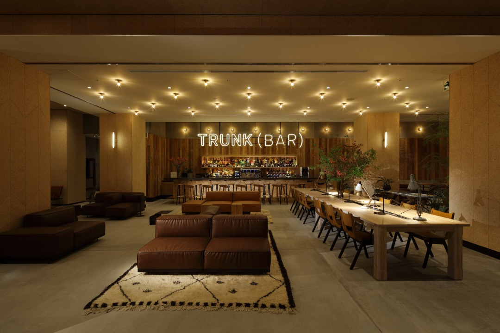
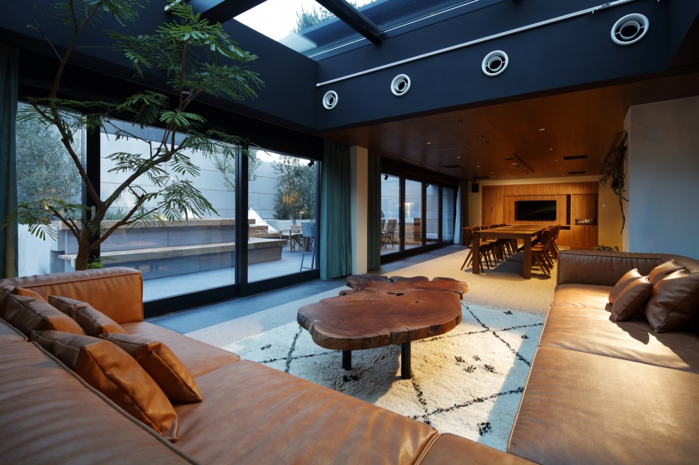

Токио · Сибуя · отель
TRUNK(HOTEL) в Сибуе: отель, где ночлег становится маленьким вкладом в общее дело

Отель TRUNK(HOTEL) открылся в 2017 году между Сибуей и Харадзюку. Его главная идея звучит непривычно для гостиницы: останавливаясь здесь, гость может внести свой небольшой вклад в жизнь общества.
Идея
Отель про «социализацию»
В основе TRUNK(HOTEL) лежит понятие, которое сами создатели называют «социализацией». На официальном сайте в 2026 году оно объясняется так: жить по-своему, без надрыва и в меру своих сил, но с понятной целью, полезной для общества. Отель старается сделать помощь людям и городу частью обычной жизни, в том числе на время поездки.
В 2017 году, когда отель открылся, эта идея была видна в самих номерах. Стаканы делали из переработанных ламп дневного света, многие вещи в комнатах были из вторичного сырья, а косметику для гостей выбирали органическую. Отель с самого начала делал ставку на вещи, сделанные в Токио.
На сайте 2026 года идея разложена на пять тем: экология, местное производство, разнообразие, здоровье и культура. Под местным производством понимают прежде всего «сделано в Токио», под здоровьем органические продукты, особенно в еде, а под культурой интерес к самобытности Токио и Сибуи.
Номера
От стандарта до люкса с террасой
В отеле 15 номеров, и они очень разные: от стандартного номера на одного или двоих до люксов, где можно устроить вечеринку.

По данным официального сайта на 2026 год, самый большой номер, Terrace Suite, занимает 140 квадратных метров, и к нему прилагается терраса ещё на 70 квадратных метров с кухней и зимним садом. В Dining Suite есть собственная кухня с духовкой и винный шкаф, в Living Suite проектор, барная стойка и проигрыватель пластинок. Стандартные номера занимают от 20 до 30 квадратных метров, у части из них есть балкон или антресоль, а в одном из них есть гамак. Кровати в стандартных номерах сделаны из переработанных материалов. В 2026 году в мини-баре предлагают закуски и напитки, придуманные в Сибуе, например местную колу.
Лаунж
Место встреч на первом этаже
Лаунж на первом этаже с самого открытия задумывали как место, где люди знакомятся и общаются. На сайте 2026 года его называют общим пространством, открытым для всей Сибуи.
В лаунже работает бар TRUNK(BAR) на 80 мест. Днём здесь варят латте из кофе, обжаренного в Сибуе, а вечером подают коктейли, в которых обыгрывают темы экологии и местные продукты Токио. В отеле также есть ресторан TRUNK(KITCHEN), где кормят завтраком, обедом и ужином, гриль-бар TRUNK(KUSHI) с кусияки, блюдами на шпажках, и магазин TRUNK(STORE) с вещами, близкими идее отеля.
В 2026 году отель называется TRUNK(HOTEL) CAT STREET. У марки есть и второй отель в Сибуе, TRUNK(HOTEL) YOYOGI PARK, который открылся в 2023 году рядом с парком Ёёги.
TRUNK(HOTEL) CAT STREET
- Адрес
- Токио, Сибуя, Дзингумаэ, 5-31
- Телефон
- +81 3-5766-3210
- Номера
- 15
- Заезд / выезд
- 15:00 / 11:00
- Цены / Вход
- от 27 000 иен за ночь без налога и сервисного сбора (2017)
- Как добраться
- от станции Сибуя 5 минут пешком (выход B1), от станции метро Мэйдзи-Дзингумаэ 7 минут пешком (выход 7)
Фото: Кодзо Такаяма.